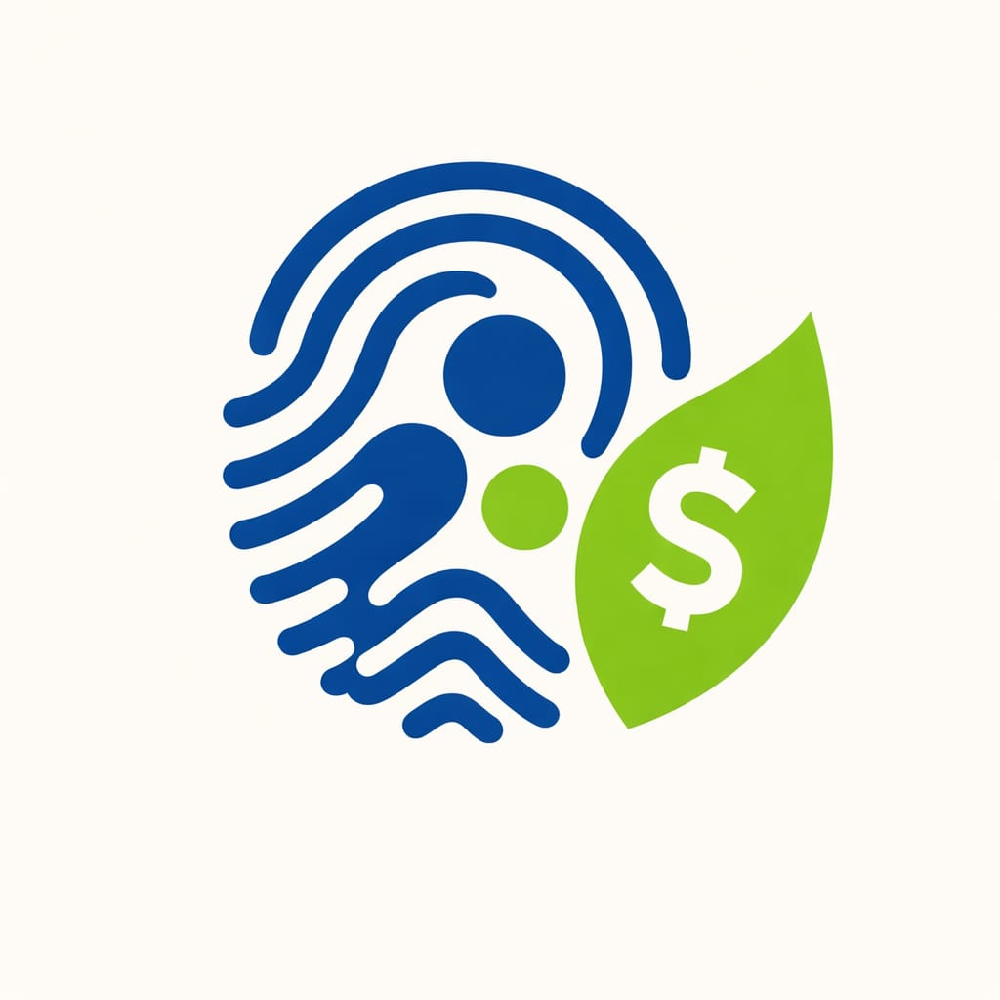
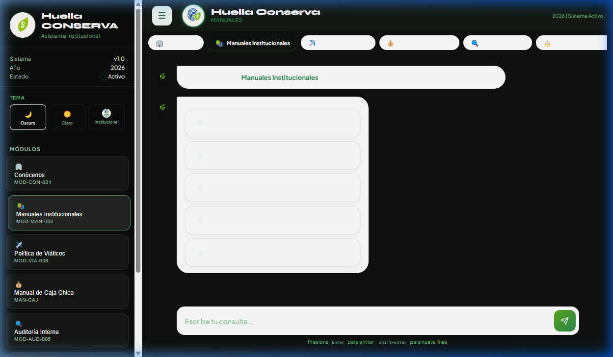
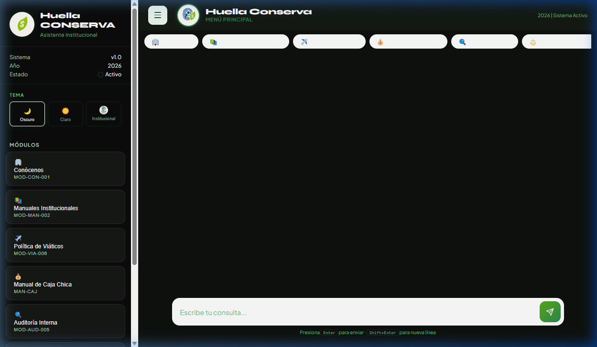
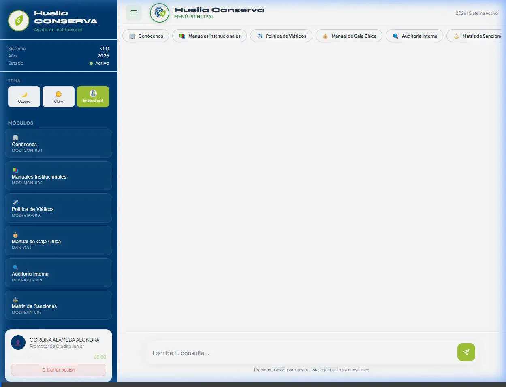

Huella Conserva
Asistente Institucional v1.2
Tu aliado digital para todo el conocimiento de Conserva.
¿Qué es Huella Conserva?
Es un asistente conversacional avanzado de inteligencia artificial, especializado en el ecosistema de productos y servicios de Conserva.
Acceso Instantáneo
A manuales operativos, políticas y procesos vigentes.
Consultas Precisas
Resuelve dudas sobre créditos, viáticos y normativa en segundos.
Manuales al Alcance de un Click

Manuales Operativos
Mujeres de Palabra, T-Activa, Vivienda, Crédito Individual y más.
Documentación Legal
Sanciones, reglamentos internos y políticas de seguridad.
Eficiencia en Procesos Administrativos

Caja Chica
Gestión transparente y rápida de gastos menores.
Política de Viáticos
Consulta de tabuladores y lineamientos de viaje actualizados.
Auditoría Interna
Soporte continuo para cumplimiento normativo.
Conócenos
Cultura organizacional y beneficios para el colaborador.
Demostración en Tiempo Real

Experiencia de escritorio optimizada con cursor de alta visibilidad.
💡 El asistente identifica la intención del usuario y calcula viáticos automáticamente con precisión institucional.
Visión: El Futuro de Huella Conserva
🧠 IA Proactiva y Preventiva
Anticipación de errores operativos mediante análisis de patrones de consulta.
📊 Inteligencia de Negocio
Dashboards estratégicos para la toma de decisiones basada en datos reales.
🤝 Omnicanalidad Total
Integración fluida con WhatsApp corp. y sistemas de reporte de campo.
🎯 Capacitación Autónoma
Rutas de aprendizaje personalizadas para cada colaborador basadas en sus dudas.